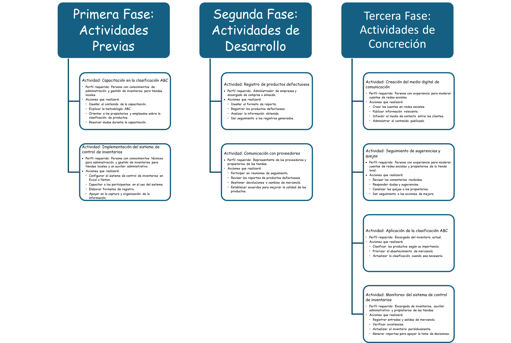
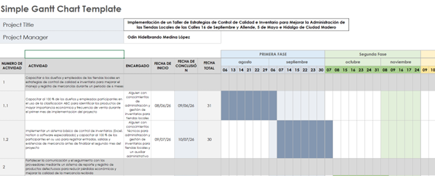
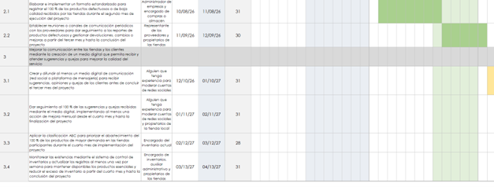

Capacitar a los dueños y empleados de las tiendas locales en estrategias de control de calidad e inventario para mejorar el manejo y registro de mercancías durante un periodo de 6 meses
✦ Fase 6 - Proyecto Final
Implementación de un Taller de Estrategias de Control de Calidad e Inventario para Mejorar la Administración de las Tiendas Locales de las Calles 16 de Septiembre y Allende, 5 de Mayo e Hidalgo de Ciudad Madero
Mi propuesta / proyecto consiste en abordar varios problemas que representan algunas tiendas locales de mi comunidad, y es importante de abordar porque las tiendas locales ubicadas en la esquina de 16 de Septiembre y 111 Allende, así como las de la calle 5 de Mayo y C. Hidalgo, tienen dificultades para administrar correctamente la calidad de sus productos y no reportan la situación a sus proveedores, lo que provoca pérdidas económicas y disminuye la confianza de los clientes. Principalmente este problema es relevante porque afecta a gran medida al vecindario o comunidad cercana, ya que la gente para comprar cosas de uso diario comunes ya sea condimentos, o alguna utilidad (herramientas, papelería u otros), están forzados a viajar lejos para comprar algo tan sencillo como eso, lo que provoca gastos innecesarios o una gran perdida de tiempo. Pretendo llevarlo a cabo mediante una implementación de un taller de estrategias de control de calidad de inventario para mejorar la administración de las tiendas, el cual recibiré ayuda de 2 amigos que viven y conviven en esta misma comunidad y vecindario.
Objetivo General
Implementar un taller de estrategias de control de calidad e inventario mediante la capacitación y aplicación de técnicas de administración y seguimiento de productos, en las tiendas locales ubicadas en las calles 16 de Septiembre y Allende, así como en 5 de Mayo e Hidalgo de Ciudad Madero, para mejorar la gestión de la calidad de los productos, fortalecer el control del inventario, reducir las pérdidas económicas y aumentar la confianza de los clientes, durante el periodo de medio año.
Objetivos Específicos
Fortalecer la comunicación y el seguimiento con los proveedores mediante un sistema de reporte y registro de productos defectuosos para reducir pérdidas económicas y mejorar la calidad de la mercancía recibida
Mejorar la comunicación entre las tiendas y los clientes mediante la creación de un medio digital que permita recibir y atender sugerencias y quejas para mejorar la calidad del servicio
Mejorar la disponibilidad y calidad de los productos de uso diario en las tiendas locales mediante la aplicación de estrategias de control de calidad e inventario, para satisfacer las necesidades de la comunidad y reducir la necesidad de desplazarse a otros establecimientos
Escucha mas mientras haces algo
Ahora es momento de hablar del precio de estas acciones.
(Cabe aclarar que los recursos pueden variar según las necesidades específicas de cada tienda, y que los materiales registrados que estan repetidos: Computadora y Licencias de Microsoft en la siguiente tabla solo se contabilizan como uno solo, y no es necesario tener mas de uno en estos 2 materiales para llevar a cabo el proyecto)
| Tabla 1. Tabla de Recursos | ||||
| Primera Fase: Actividades Previas | ||||
| Tareas | Recursos Materiales | Recursos Tecnológicos | Recursos Financieros | Recursos Humanos |
|---|---|---|---|---|
| Tarea 1.1: Capacitar al 100 % de los dueños y empleados participantes en el uso de la clasificación ABC para identificar los productos de mayor importancia económica y frecuencia de venta durante el primer mes de implementación del proyecto | Guías impresas, hojas, libretas, bolígrafos y computadora | Excel (Microsoft 365) | $2,043.00 Microsoft 365 $1,849 + Cuaderno $26.10 + Pluma $53.90 + Papel $114 + $2,463 Impresora + $10,000 Computadora | Alguien con conocimientos de administración y gestión de inventarios para tiendas locales |
| Tarea 1.2: Implementar un sistema básico de control de inventarios (Excel, Notion o software especializado) y capacitar al 100 % de los participantes en su uso para registrar entradas, salidas y existencias de mercancía durante el segundo mes del proyecto | Manuales impresos y formatos de registro | Excel (Microsoft 365) y Notion | $2,463 Impresora $2,349 + Papel $114 | Alguien con conocimientos técnicos para administración y gestión de inventarios para tiendas locales y un auxiliar administrativo |
| Segunda Fase: Actividades de Desarrollo | ||||
| Tareas | Recursos Materiales | Recursos Tecnológicos | Recursos Financieros | Recursos Humanos |
| Tarea 2.1: Elaborar e implementar un formato estandarizado para registrar el 100 % de los productos defectuosos o de baja calidad recibidos por las tiendas durante el tercer mes del proyecto | Carpetas, hojas e impresiones | Excel y Notion | $208.50 Carpeta $94.50 + Papel $114 + $2,463.00 Impresora + $2,043.00 Microsoft 365 | Administrador de empresas y encargado de compras o almacén |
| Tarea 2.2: Establecer reuniones o canales de comunicación periódicos con los proveedores para dar seguimiento a los reportes de productos defectuosos y gestionar devoluciones, cambios o mejoras a partir del cuarto mes del proyecto | Carpetas, hojas y pluma | Redes sociales (Whatsapp) | $148.40 Carpeta $94.50 + Pluma $53.90 | Representante de los proveedores y propietarios de las tiendas |
| Tercera Fase: Actividades de Concreción | ||||
| Tareas | Recursos Materiales | Recursos Tecnológicos | Recursos Financieros | Recursos Humanos |
| Tarea 3.1: Crear y difundir al menos un medio digital de comunicación (red social o plataforma de mensajería) para recibir sugerencias, opiniones y quejas de los clientes durante el quinto mes del proyecto | Computadora | Redes sociales (Google Meet) | $315.04 (Salario del moderador de redes sociales) + $10,000 Computadora | Alguien que tenga experiencia para moderar cuentas de redes sociales |
| Tarea 3.2: Dar seguimiento al 100 % de las sugerencias y quejas recibidas mediante el medio digital, implementando al menos una acción de mejora mensual desde el sexto mes del proyecto | Computadora, carpetas y hojas | Excel | $208.50 Carpeta $94.50 + Papel $114 + + $10,000 Computadora | Alguien que tenga experiencia para moderar cuentas de redes sociales y propietarios de la tienda local |
| Tarea 4.1: Aplicar la clasificación ABC para priorizar el abastecimiento del 100 % de los productos de mayor demanda en las tiendas participantes durante el séptimo mes del proyecto | Computadora, cuaderno y pluma | Excel, Notion | $80.00 Cuaderno $26.10 + Pluma $53.90 + $2,043.00 Microsoft 365 + + $10,000 Computadora | Encargado del inventario actual |
| Tarea 4.2: Monitorear las existencias mediante el sistema de control de inventarios y actualizar los registros al menos una vez por semana para mantener disponibles los productos esenciales y reducir el exceso de inventario durante el octavo mes del proyecto | Hojas de control, carpetas y Computadora | Excel y Notion | $262.40 Carpeta $94.50 + Papel $114 + Pluma $53.90 + $2,043.00 Microsoft 365 | Encargado de inventarios, auxiliar administrativo y propietarios de las tiendas |
| Nota. Elaboración Propia. | ||||
Por otra parte, el siguiente recurso puede servirte para ver el camino que tomara este Proyecto, como tambien respuestas a ciertas variables.
Figura 1. Diagrama de Flujo

Nota. Elaboración Propia.
Ahora llegados a este punto, me gustaría explicarles a mas detalle mi Proyecto en un formato de video en el siguiente link:
VideoAhora no nos olvidemos de los colaboradores profesionales que se necesitaran para llevar a cabo este Proyecto.
Figura 2. Diagrama de Perfiles

Nota. Elaboración Propia.
Tabla de Recursos
Ahora que ya tenemos todo lo importante, toca ordenarnos, que hacer primero, que hacer despues y con que terminar, todo en un orden
| Tabla 2. Actividades, tareas y recursos (materiales, tecnológicos, financieros y humanos) que se requieren para la implementación de mi proyecto | ||||||||
| Primera Fase: Actividades Previas | ||||||||
| Actividades | Tiempo Total de la Actividad | Fecha de Inicio | Fecha de Conclusión | Tareas | Recursos Materiales | Recursos Tecnológicos | Recursos Financieros | Recursos Humanos |
|---|---|---|---|---|---|---|---|---|
| Actividad 1: Capacitar a los dueños y empleados de las tiendas locales en estrategias de control de calidad e inventario para mejorar el manejo y registro de mercancías durante un periodo de 6 meses | 1 Mes | 6 / 8 / 2026 | 6 / 9 / 2026 | Tarea 1.1: Capacitar al 100 % de los dueños y empleados participantes en el uso de la clasificación ABC para identificar los productos de mayor importancia económica y frecuencia de venta durante el primer mes de implementación del proyecto | Guías impresas, hojas, libretas, bolígrafos y computadora | Excel (Microsoft 365) | $2,043.00 Microsoft 365 $1,849 + Cuaderno $26.10 + Pluma $53.90 + Papel $114 + $2,463 Impresora + $10,000 Computadora | Alguien con conocimientos de administración y gestión de inventarios para tiendas locales |
| 1 Mes | 7 / 9 / 2026 | 7 / 10 / 2026 | Tarea 1.2: Implementar un sistema básico de control de inventarios (Excel, Notion o software especializado) y capacitar al 100 % de los participantes en su uso para registrar entradas, salidas y existencias de mercancía durante el segundo mes del proyecto | Manuales impresos y formatos de registro | Excel (Microsoft 365) y Notion | $2,463 Impresora $2,349 + Papel $114 | Alguien con conocimientos técnicos para administración y gestión de inventarios para tiendas locales y un auxiliar administrativo | |
| Segunda Fase: Actividades de Desarrollo | ||||||||
| Actividades | Tiempo Total de la Actividad | Fecha de Inicio | Fecha de Conclusión | Tareas | Recursos Materiales | Recursos Tecnológicos | Recursos Financieros | Recursos Humanos |
| Actividad 2: Fortalecer la comunicación y el seguimiento con los proveedores mediante un sistema de reporte y registro de productos defectuosos para reducir pérdidas económicas y mejorar la calidad de la mercancía recibida | 1 Mes | 8 / 10 / 2026 | 8 / 11 / 2026 | Tarea 2.1: Elaborar e implementar un formato estandarizado para registrar el 100 % de los productos defectuosos o de baja calidad recibidos por las tiendas durante el tercer mes del proyecto | Carpetas, hojas e impresiones | Excel y Notion | $208.50 Carpeta $94.50 + Papel $114 + $2,463.00 Impresora + $2,043.00 Microsoft 365 | Administrador de empresas y encargado de compras o almacén |
| 1 Mes | 9 / 11 / 2026 | 9 / 12 / 2026 | Tarea 2.2: Establecer reuniones o canales de comunicación periódicos con los proveedores para dar seguimiento a los reportes de productos defectuosos y gestionar devoluciones, cambios o mejoras a partir del cuarto mes del proyecto | Carpetas, hojas y pluma | Redes sociales (Whatsapp) | $148.40 Carpeta $94.50 + Pluma $53.90 | Representante de los proveedores y propietarios de las tiendas | |
| Tercera Fase: Actividades de Concreción | ||||||||
| Actividades | Tiempo Total de la Actividad | Fecha de Inicio | Fecha de Conclusión | Tareas | Recursos Materiales | Recursos Tecnológicos | Recursos Financieros | Recursos Humanos |
| Actividad 3: Mejorar la comunicación entre las tiendas y los clientes mediante la creación de un medio digital que permita recibir y atender sugerencias y quejas para mejorar la calidad del servicio | 1 Mes | 10 / 12 / 2026 | 10 / 1 / 2027 | Tarea 3.1: Crear y difundir al menos un medio digital de comunicación (red social o plataforma de mensajería) para recibir sugerencias, opiniones y quejas de los clientes durante el quinto mes del proyecto | Computadora | Redes sociales (Google Meet) | $315.04 (Salario del moderador de redes sociales) + $10,000 Computadora | Alguien que tenga experiencia para moderar cuentas de redes sociales |
| 1 Mes | 11 / 1 / 2027 | 11 / 2 / 2027 | Tarea 3.2: Dar seguimiento al 100 % de las sugerencias y quejas recibidas mediante el medio digital, implementando al menos una acción de mejora mensual desde el sexto mes del proyecto | Computadora, carpetas y hojas | Excel | $208.50 Carpeta $94.50 + Papel $114 + + $10,000 Computadora | Alguien que tenga experiencia para moderar cuentas de redes sociales y propietarios de la tienda local | |
| Actividad 4: Mejorar la disponibilidad y calidad de los productos de uso diario en las tiendas locales mediante la aplicación de estrategias de control de calidad e inventario, para satisfacer las necesidades de la comunidad y reducir la necesidad de desplazarse a otros establecimientos | 1 Mes | 12 / 2 / 2027 | 12 / 3 / 2027 | Tarea 4.1: Aplicar la clasificación ABC para priorizar el abastecimiento del 100 % de los productos de mayor demanda en las tiendas participantes durante el séptimo mes del proyecto | Computadora, cuaderno y pluma | Excel, Notion | $80.00 Cuaderno $26.10 + Pluma $53.90 + $2,043.00 Microsoft 365 + + $10,000 Computadora | Encargado del inventario actual |
| 1 Mes | 13 / 3 / 2027 | 13 / 4 / 2027 | Tarea 4.2: Monitorear las existencias mediante el sistema de control de inventarios y actualizar los registros al menos una vez por semana para mantener disponibles los productos esenciales y reducir el exceso de inventario durante el octavo mes del proyecto | Hojas de control, carpetas y Computadora | Excel y Notion | $262.40 Carpeta $94.50 + Papel $114 + Pluma $53.90 + $2,043.00 Microsoft 365 | Encargado de inventarios, auxiliar administrativo y propietarios de las tiendas | |
| Nota. Elaboración Propia. | ||||||||
Diagrama de Gantt
¿Necesitas una planificación mas visual y ordenada?
Tenemos para ti un recurso clave para que puedas llevar a cabo este proyecto. A continuación, te compartimos ejemplos del uso del Diagrama de Gantt
Figura 3. Diagrama de Gantt enfocado en mi Proyecto


Nota. Elaboración Propia.
Pero si lo deseas, puedes visualizarlo o descargarlo para modificarlo y que se adapte a tus necesidades, asi tendras la oportunidad de comprenderlo de primera mano
Diagrama de GanttPosibles Escenarios
Por otra parte, estos son algunos de los escenarios que representan del mejor escenario al peor escenario.
| Tabla 3. Posibles Escenarios | ||
| Descripción de Escenarios | Propuesta de Solución | Acciones |
|---|---|---|
| El escenario mas ideal para mi proyecto logra implementarse de manera constante durante los ocho meses y las dos tiendas adoptan realmente las estrategias propuestas, como también los dueños y empleados participan en la capacitación, se asignan responsables para el inventario y la recepción de mercancía, se utiliza correctamente el sistema de Excel o Notion y se aplica la inspección de los productos antes de ponerlos a la venta. Además, los productos defectuosos comienzan a registrarse y reportarse a los proveedores, permitiendo conseguir cambios, devoluciones o incluso buscar nuevos proveedores cuando sea necesario. Al mismo tiempo, el medio digital para recibir quejas y sugerencias permite conocer mejor las necesidades de los clientes y realizar mejoras | En el mundo real no existen los escenarios perfectos 😉 |
|
| El proyecto se estanca desde el principio, ya que los dueños y empleados no mantienen el compromiso necesario para aplicar las estrategias, provocando que el proyecto quede incompleto, lo que haría que no se asignen responsables claros para cada tarea y meta, y que los medios digitales para quejas y sugerencias no tengan seguimiento o se utilice de manera inadecuada, haciendo que las opiniones de los clientes no se conviertan en mejoras reales | Para mejorar el desarrollo en este escenario, sería necesario reducir la complejidad de las actividades y concentrarse primero en las acciones más importantes: asignar claramente quién se encargará del inventario y de recibir la mercancía, utilizar formatos sencillos de registro, establecer revisiones cortas pero frecuentes y acompañar personalmente a los responsables durante las primeras semanas. También sería conveniente analizar cada mes qué actividad está fallando y corregirla antes de continuar con nuevas tareas, en lugar de intentar implementar todo al mismo tiempo. Si un proveedor no coopera, se puede utilizar el registro histórico para comparar alternativas y tomar una decisión; y si existe poca participación del personal, sería necesario reforzar la comunicación y adaptar las actividades a sus horarios. |
|
| Nota. Elaboración Propia. | ||
¡Hora de Reflexionar!
- ¿Qué estándares te servirían para identificar el peor de los escenarios?
Para identificar el peor de los escenarios de mi proyecto utilizaría principalmente estándares relacionados con el cumplimiento de las actividades, el tiempo y los resultados obtenidos, como también compararía lo que realmente está sucediendo en las tiendas con los tiempos y actividades que establecí desde el inicio, tomando como referencia una de las actividades de este modulo, exacto, el diagrama de Gantt, con el fin de detectar retrasos importantes en la capacitación, implementación de técnicas del inventario, inspección de mercancía y seguimiento a proveedores.
- ¿Qué estándares te servirían como guía para cerciorarte de que las acciones propuestas para mejorar el desarrollo de tu proyecto son adecuadas?
Para asegurarme de que las acciones propuestas realmente están mejorando el desarrollo de mi proyecto utilizaría tres estándares relacionados entre si, el primero creo yo sería revisar periódicamente si las actividades de mejora se están cumpliendo dentro de los tiempos establecidos, por ejemplo, mediante revisiones semanales y mensuales para comprobar que no vuelvan a acumularse retrasos, pues creo que es importante que recuerde, que este proyecto se hace para que el vecindario pueda comprar cosas cotidianas, y esperar tanto tiempo para algo como esto, seria sin duda, complicado y critico, por lo que el tiempo apremia. El segundo sería pedir la opinión de una persona externa al proyecto, como un vecino que conozca o frecuente la tienda, para saber si nota cambios en la organización, la atención, la disponibilidad y la calidad de los productos, ya que su perspectiva podría mostrar cambios que yo o los empleados no percibimos. El tercero sería registrar periódicamente cantidades de productos defectuosos detectados, productos devueltos a proveedores, diferencias de inventario, devoluciones de clientes y número de revisiones realizadas. Si con el paso del tiempo se observa que las actividades se cumplen, la opinión externa es favorable y los indicadores muestran una mejora en sus cantidades, tendría mayor certeza de que las acciones implementadas son adecuadas.
- ¿De qué tipo tendrían que ser los estándares para medir los resultados de tu proyecto? Pueden ser de calidad, cantidad, tiempo, finanzas, etc. ¿Por qué?
Para medir los resultados de mi proyecto utilizaría principalmente estándares de calidad y cantidad, porque considero que ambos permiten comprobar de una manera más clara si realmente se produjo una mejora en las tiendas, por lo que en cuanto a la calidad, observaría si los productos que reciben las tiendas se encuentran en mejores condiciones, si se realiza correctamente la inspección de mercancía, si disminuyen las reclamaciones y si los clientes perciben una mejor atención y disponibilidad de productos. En cuanto a la cantidad, compararía datos como el número de productos defectuosos detectados, devoluciones, incidencias con proveedores, diferencias de inventario y productos disponibles antes y después de implementar las estrategias. Pero creo yo que estos estándares también tendrían una consecuencia indirecta en el aspecto económico, porque al mejorar la calidad y reducir desperdicios, devoluciones y pérdidas de mercancía, las tiendas podrían disminuir gastos innecesarios y proteger mejor sus ganancias, por eso considero que medir principalmente calidad y cantidad me permitiría demostrar de forma más objetiva si el proyecto realmente cumplió con su propósito.
Estandares Principales
- Cumplimiento del cronograma, verificar que al menos el 90 % de las actividades programadas se realicen dentro del tiempo establecido, permitiendo como máximo un retraso de 1 semana en actividades que dependan de factores externos.
- Capacitación del personal: comprobar que todos los dueños y empleados hayan recibido la capacitación sobre clasificación ABC, control de inventario e inspección de mercancía.
- Aplicación de la clasificación ABC, revisare que el 100% de los productos estén clasificados correctamente para identificar cuáles tienen mayor importancia económica y frecuencia de venta.
- Actualización del inventario, verificar que al menos el 80% de las entradas, salidas y existencias de mercancía se registren y actualicen de manera constante mediante Excel o Notion.
- Inspección de mercancía recibida: comprobar que los productos sean revisados al momento de recibirlos y que los artículos defectuosos sean separados antes de ponerlos a la venta, esperando un margen de menos del 25% de estos productos defectuosos de todo el inventario.
- Registro de productos defectuosos, el cual checare si los productos de baja calidad están siendo registrados correctamente mediante el formato de reporte y evidencias correspondientes.
- Seguimiento a proveedores, tengo que verificar que los reportes de productos defectuosos sean comunicados a los proveedores y que exista seguimiento para conseguir cambios, devoluciones o mejoras.
- Disponibilidad de productos: revisar si los productos de mayor demanda se mantienen disponibles y si se evita acumular mercancía innecesaria mediante el uso del sistema de inventario.
- Atención a las opiniones de los clientes: comprobar que las quejas y sugerencias recibidas mediante WhatsApp, Facebook u otro medio sean registradas, revisadas y utilizadas para realizar mejoras, revisare que el Moderador contratado pueda responder a estas sugerencias en menos de 12 horas como máximo.
- Reducción de productos defectuosos y devoluciones: comparar periódicamente la cantidad de productos defectuosos, desperdicios y devoluciones para determinar si las estrategias están produciendo una mejora.
- Cumplimiento de las revisiones periódicas, verificar que se realice al menos una revisión mensual durante los ocho meses del proyecto, dando un total mínimo de 8 revisiones. Esto además coincide muy bien con la estructura de seguimiento que ya planteaste.
- Comparación de resultados antes y después: al finalizar el proyecto, comparar indicadores como pérdidas y buscar que al menos 3 de los principales indicadores presenten una mejora, como por ejemplo, devoluciones, control del inventario, disponibilidad de productos y satisfacción de los clientes para determinar si realmente hubo una mejora.
Referencias
Comision Nacional de los Salarios Minimos. (s.f.). Salarios Minimos. Tamaulipas Gobierno del Estado. https://finanzas.tamaulipas.gob.mx/uploads/2022/02/TABLA_SALARIOS_MINIMOS.pdf
Discord. (s.f.). Acerca de Discord | Nuestra misión e historia. https://discord.com/company
Editorial Etecé. (2026, 23 de Enero). El presupuesto tiene como finalidad prevenir y corregir errores financieros. https://concepto.de/presupuesto/
Linkedin. (s.f.). Acerca de Linkedin. https://about.linkedin.com/es-es?trk=homepage-basic_directory_aboutUrl&lr=1
Microsoft 365. (s.f.c). Tu productividad, supercargada. Microsoft. https://www.microsoft.com/es-mx/microsoft-365/buy/compare-all-microsoft-365-products?msockid=39c8b9f8deae6c021834ae7cdf296def#PersonalAnnualPaidYearly
Miro. (s.f.). Diagramas de Flujo [Imagen]. https://miro.com/es/diagrama-de-flujo/que-es-diagrama-de-flujo/
OfficeDepot. (s.f.a). Carpeta Oxford 3 argollas Carta Blanco. https://www.officedepot.com.mx/officedepot/en/Categor%C3%ADa/Todas/Oficina/Registradores-y-Carpetas/Carpetas-Arillo-Redondo/Carpeta-Oxford-3-argollas-Carta-Blanco/p/100126701
OfficeDepot. (s.f.b). Pluma de Gel Sharpie .7 mm Azul. https://www.officedepot.com.mx/officedepot/en/Categor%C3%ADa/Todas/Oficina/Escritura/Plumas-y-bol%C3%ADgrafos-de-Gel/Pluma-de-Gel-Sharpie-7-mm-Azul/p/100140991
OfficeDepot. (s.f.d). Papel Bond Tamaño Carta Office Depot Blanco 500 hojas. https://www.officedepot.com.mx/officedepot/en/Categor%C3%ADa/Todas/Originales-Office-Depot/Oficina-y-Papeler%C3%ADa/Cajas-y-Papel-Bond/Papel-Bond-Tama%C3%B1o-Carta-Office-Depot-Blanco-500-hojas/p/6891
OfficeDepot. (s.f.e). Impresora Tinta Continua Canon Pixma G1130 Color USB. https://www.officedepot.com.mx/officedepot/en/Categor%C3%ADa/Todas/Impresi%C3%B3n/Impresoras%2C-Multifuncionales-y-Esc%C3%A1neres/Impresoras-de-Tinta/Impresora-Tinta-Continua-Canon-Pixma-G1130-Color-USB/p/100188207
Ofix. (s.f.). Cuaderno Profesional 100H Cuadro Grande Norma Basic 583150. https://www.ofix.mx/cuaderno-profesional-100h-cuadro-grande-norma-basic---norma-583150/p
Prepa en Línea-SEP. (2026, 1 de Julio). Fase 7. Análisis de mi Proyecto. Módulo 22. Tecnologías emergentes para la resolución de problemas. Plataforma de aprendizaje.
Prepa en Línea-SEP. (s.f.). Recursos de apoyo para la administración. Módulo 23. Tecnologías emergentes para la administración y gestión. Plataforma de aprendizaje.
Prepa en Línea-SEP. (s.f.). Para saber más: Gestión de proyectos. Módulo 23. Tecnologías emergentes para la administración y gestión. Plataforma de aprendizaje.
Prepa en Línea-SEP. (s.f.). La gestión en los ámbitos educativo, laboral y social. Módulo 23. Tecnologías emergentes para la administración y gestión. Plataforma de aprendizaje.
Prepa en Línea-SEP. (s.f.). Funciones de la administración y proceso administrativo. Módulo 23. Tecnologías emergentes para la administración y gestión. Plataforma de aprendizaje.
Prepa en Línea-SEP. (s.f.). Para saber más: Proceso administrativo. Fases y etapas. Módulo 23. Tecnologías emergentes para la administración y gestión. Plataforma de aprendizaje.
Prepa en Línea-SEP. (s.f.). ¿Qué es la administración?. Módulo 23. Tecnologías emergentes para la administración y gestión. Plataforma de aprendizaje.
Prepa en Línea-SEP. (s.f.). Definición de la planificación de un proyecto. Módulo 23. Tecnologías emergentes para la administración y gestión. Plataforma de aprendizaje.
Prepa en Línea-SEP. (s.f.). Diseño de procesos y diagramas de flujo. Módulo 23. Tecnologías emergentes para la administración y gestión. Plataforma de aprendizaje.
Prepa en Línea-SEP. (2026, 1 de Julio). Fase 7. Análisis de mi Proyecto. Módulo 22. Tecnologías emergentes para la resolución de problemas. Plataforma de aprendizaje.
Redacción. (2018, 13 de Noviembre). Recursos tecnológicos muy útiles y que todo el mundo debería conocer [Imagen]. MarketingDirecto. https://www.marketingdirecto.com/digital-general/digital/recursos-tecnologicos-muy-utiles-y-que-todo-el-mundo-deberia-conocer
Prepa en Línea-SEP. (s.f.). Características de planeación. Módulo 23. Tecnologías emergentes para la administración y gestión. Plataforma de aprendizaje.
Prepa en Línea-SEP. (s.f.). Tipos de planificación. Módulo 23. Tecnologías emergentes para la administración y gestión. Plataforma de aprendizaje.
Prepa en Línea-SEP. (s.f.). Etapas de la planeación estratégica. Módulo 23. Tecnologías emergentes para la administración y gestión. Plataforma de aprendizaje.
Prepa en Línea-SEP. (s.f.). Diagrama de barras y método de la ruta crítica. Módulo 23. Tecnologías emergentes para la administración y gestión. Plataforma de aprendizaje.
Prepa en Línea-SEP. (s.f.). Evaluación del proyecto. Módulo 23. Tecnologías emergentes para la administración y gestión. Plataforma de aprendizaje.
Prepa en Línea-SEP. (s.f.). Tecnicas de programacion o planificación. Módulo 23. Tecnologías emergentes para la administración y gestión. Plataforma de aprendizaje.